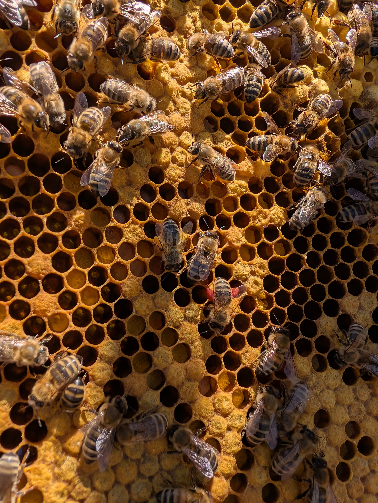

Das Bienenvolk
Die Honigbiene ist ein fleißiges Insekt, das von Blüte zu Blüte fliegt und Nektar, Pollen sowie Baumharz sammelt. Auch im Innenleben des Bienenstocks sind die Bienen unermüdlich. Die Königin sichert den Fortbestand, indem sie täglich bis zu 2.000 Eier legt, was beinahe ihrem eigenen Körpergewicht entspricht. Die Arbeiterinnen teilen sich die Aufgaben je nach Alter auf: Einige kümmern sich um die Brut, pflegen die Königin, veredeln den Honig oder verteidigen den Stock, während andere ausfliegen, um Vorräte zu sammeln. Dann gibt es noch die Drohnen, die im Frühling geboren werden und nur die Aufgabe haben, die Königin zu befruchten. Im Spätsommer werden sie durch die sogenannte Drohnenschlacht aus dem Bienenstock vertrieben.
Zunahme
Wenn die Bienen genug Nektar finden, wächst die Kolonie. Wenn das Gewicht sinkt beginnt die Trachtpause.
Temperatur
Das Brutnest wird konstant auf 35°C gehalte egal wie kalt oder warm es außerhalb ist.
Einblicke in den Stock
Die Königin ist einzigartig im Bienenvolk. Während der Hochsaison legt sie bis zu 2.000 Eier pro Tag.
Mehr zur Königin
Das sind die männlichen Bienen. Sie schlüpfen nur während der Trachtzeit. Ihre einzige Aufgabe ist die Begattung einer Jungkönigin.
Mehr Informationen zum Drohn
In die Wachszellen legt die Königin ihre Eier. Je nach Wesen (Drohn, Arbeiterin oder Königin) dauert das Heranwachsen unterschiedlich lang.
Mehr Informationen zur Brut
Der gesammelte Nektar wird zu Honig veredelt. Eingelagerter Honig versorgt das Volk über das ganze Jahr hinweg.
Mehr Informationen zum Futter/HonigPollen ist die wichtigste Proteinquelle im Stock. Sammlerinnen transportieren ihn in den „Pollenhöschen“ an ihren Hinterbeinen.
Mehr Informationen zum Pollen
Ein Bienenvolk kann bis zu 60.000 Individuen zählen. Jede einzelne Biene hat ihre eigenen, festen Aufgaben.
Mehr Informationen zum BienenstockHonig-Guide
| Sorte | Merkmal |
|---|---|
| Rapshonig | Schneeweiß & cremig |
| Waldhonig | Dunkel & mineralreich |
| Akazienhonig | Klar & flüssig |